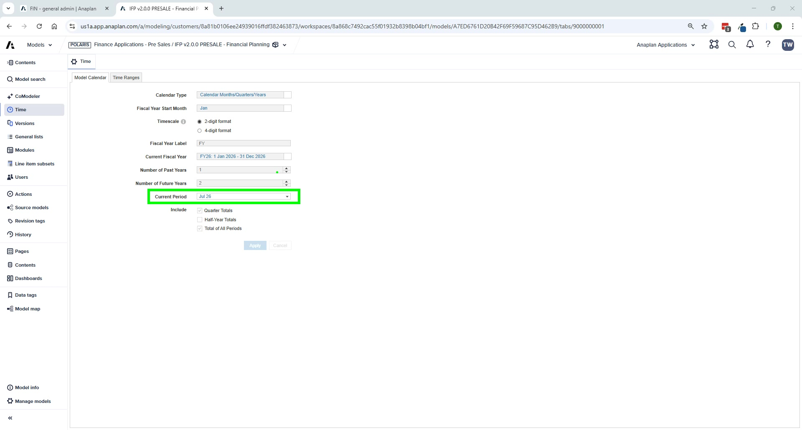

Model Architecture
IFP v2.0 is built on four Anaplan models that work together as a connected planning suite. Understanding how they relate is essential for configuration, data loading, and troubleshooting.
The Four Models

| Model | Role | Key Contents |
|---|---|---|
| Admin | Central hub — master data & mappings | Source lists, planning hierarchies, source-to-planning mapping pages |
| Financial Planning (FP) | Core planning hub | Revenue/COGS, OpEx, Balance Sheet, Cash Flow, Top-Down, Reporting |
| Headcount (HC) | Workforce planning spoke | Job library, pay bands, HC planning inputs, cost calculations |
| Capital Expense (CE) | CapEx planning spoke | Asset purchases, depreciation, disposals, net fixed asset roll-forward |
Data Flow Between Models
- Admin → All Spokes (via ADO): Planning hierarchies (Entity, Dept, IS accounts, BS accounts) pushed to FP, HC, CE
- HC → FP: Workforce costs imported via FIN – Import from HC Model action
- CE → FP: CapEx depreciation and asset values imported via FIN – Import from CapEx Model action
- FP → Reporting: All P&L, BS, and CF data consolidated in FP's Reporting & Analysis module
🚨 Cross-Model Import Reminder
After making changes in the HC or CapEx model, you must manually run the import action in the FP Admin pages to sync data. Changes do NOT flow automatically — this is a common source of 'missing data' issues.
Architectural Decisions
| Decision | Rationale |
|---|---|
| Native Versions | Enables switchover dates, CURRENTVERSION() functions, formula scope, and bulk copy |
| No subsets for planning | Maximizes Polaris model performance |
| ADO links replace import actions | Greater data control, eliminates data hub memory usage |
| Entity-level only for CapEx/BS | Performance — operational dimensions (dept, geo) not needed for these modules |
Dimensions Overview
Required Dimensions (all modules)
Time · Account · Version · Entity
Optional Dimensions (configurable per implementation)
| Dimension | Used In | Configurable Name |
|---|---|---|
| Department | Revenue/COGS, OpEx, HC, Top-Down | Yes — e.g., 'Cost Center', 'Division' |
| Geography | Revenue/COGS, OpEx, Top-Down | Yes — e.g., 'Region', 'Location' |
| Product | Revenue/COGS, Top-Down | Yes — e.g., 'SKU', 'Service' |
| Customer | Revenue/COGS, Top-Down | Yes — e.g., 'Client', 'Buyer' |
| Functional Area | OpEx, Top-Down | Yes — e.g., 'Workstream' |
| Vendor | OpEx | Yes — e.g., 'Supplier' |
⚠️ 8-Dimension Hard Limit
IFP v2.0 supports a maximum of 8 dimensions for the application. Customers requiring more than 8 dimensions will need a bespoke model build as an extension. Validate dimension count before configuring.